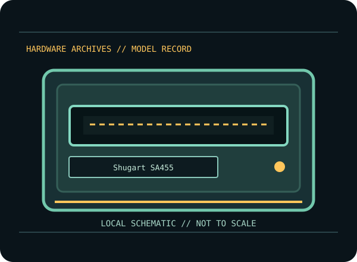

[ INDIVIDUAL COMPONENT // FLOPPY DRIVES ]
Shugart SA455 5.25-inch Drive
A model-specific record for an identified floppy mechanism or external floppy system. It distinguishes cited product documentation from details that depend on the unit’s full suffix, hardware revision and host configuration.

MODEL IDENTIFICATION: Shugart SA455. Verify the nameplate and applicable manual before connection or repair; family-level similarity does not guarantee compatible wiring, firmware, media format or alignment.
Documented product characteristics
| Catalog subcategory | 5.25-inch drive mechanisms |
|---|---|
| Exact model | Shugart SA455 |
| Manufacturer family | Shugart double-sided minifloppy drive series |
| Source-backed record | The Shugart reference manual identifies Shugart SA455 as a particular member of the SA455/465 drive series. These are model-specific 5.25-inch mechanisms; use the matching manual for interface, density, configuration and adjustment details. |
| Connector / host formats / capacity | Consult the model-specific manufacturer documentation below and inspect the unit’s exact configuration. No connector pinout, host format or capacity is generalized where the cited manual does not clearly establish that value for this exact model. |
Model-specific compatibility
- Record the complete model suffix, revision, serial/date code, board/assembly markings, and cable configuration before installation.
- The Shugart reference manual identifies Shugart SA455 as a particular member of the SA455/465 drive series. These are model-specific 5.25-inch mechanisms; use the matching manual for interface, density, configuration and adjustment details.
- Confirm drive select, connector orientation, power, host controller, termination, disk density, recording rate and format against the model-specific manual. Do not infer capacity or host support from a shared form factor or connector appearance.
Preservation and service notes
Follow the cited OEM/service procedure for any head cleaning, alignment or adjustment; do not improvise a service method from another family member. Inspect disks for visible damage before inserting them, and stop if the mechanism makes abnormal noise or causes read instability.
Photograph labels and board markings before service. Record the host/controller, cable, firmware/software, test media and observed condition. Keep original media and raw acquisition captures intact; verify checksummed copies before making derivatives.
Manufacturer manuals & source references
- Shugart — SA455/SA465 Reference Manual (October 1984)Shugart model reference for the SA455 and SA465 mechanisms.
- Shugart — SA455/SA465 Service Manual (May 1983)Shugart service manual for both documented drive models.
Sources point to original manufacturer manuals/specifications or archival scans of that source. Follow the exact model/suffix-specific table and service section; a shared family document is not evidence that all revisions have identical wiring or capabilities.